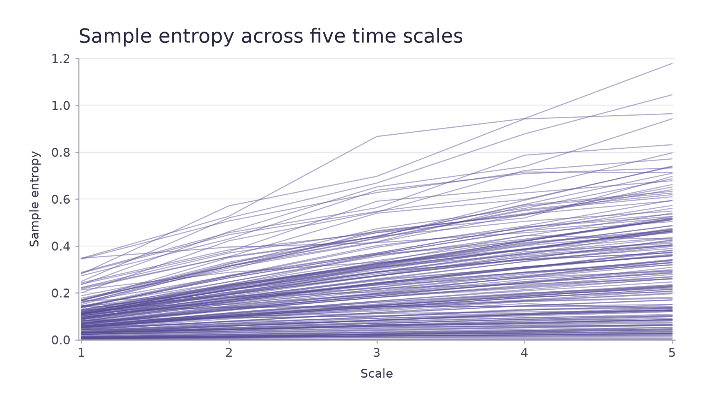

Multiscale oxygen saturation entropy in cirrhosis
Investigated whether temporal patterns in oxygen saturation carried prognostic information in critically ill patients with cirrhosis.


Signal processing
Developed MATLAB pipelines for filtering ICU recordings, handling outliers and calculating sample entropy. The project examined 20-minute recordings from 200 patients with cirrhosis; the figure shows the 169-patient analysis presented in the summer project.
Statistical analysis
Evaluated associations with prognosis using regression and ROC analysis in SPSS and Stata. Additional analyses considered heart rate and respiration alongside oxygen saturation and compared patterns in cirrhosis and sepsis cohorts.